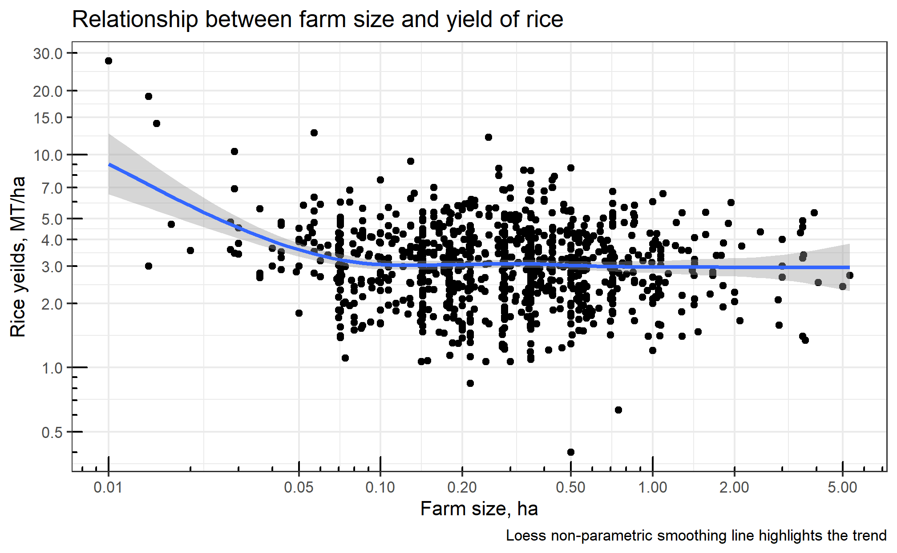
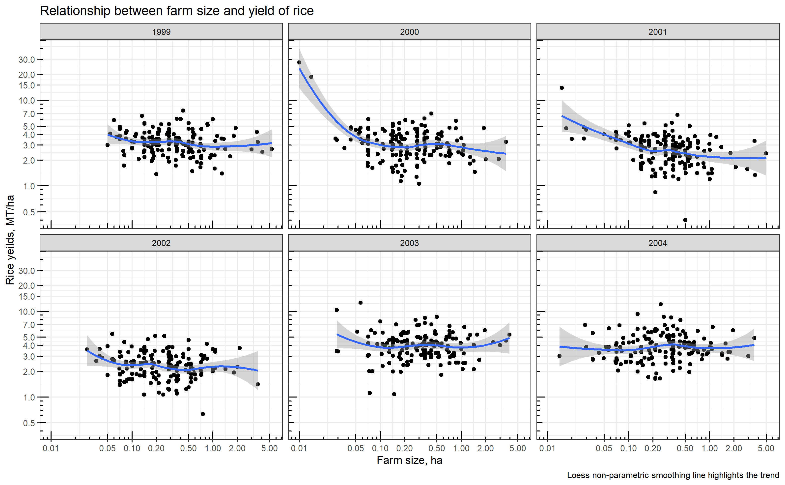
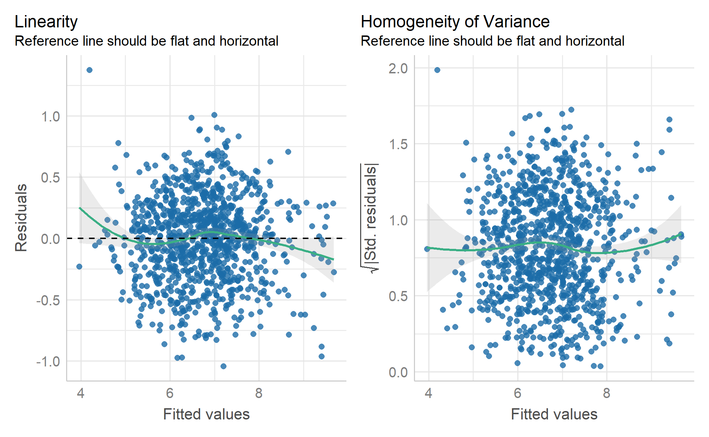
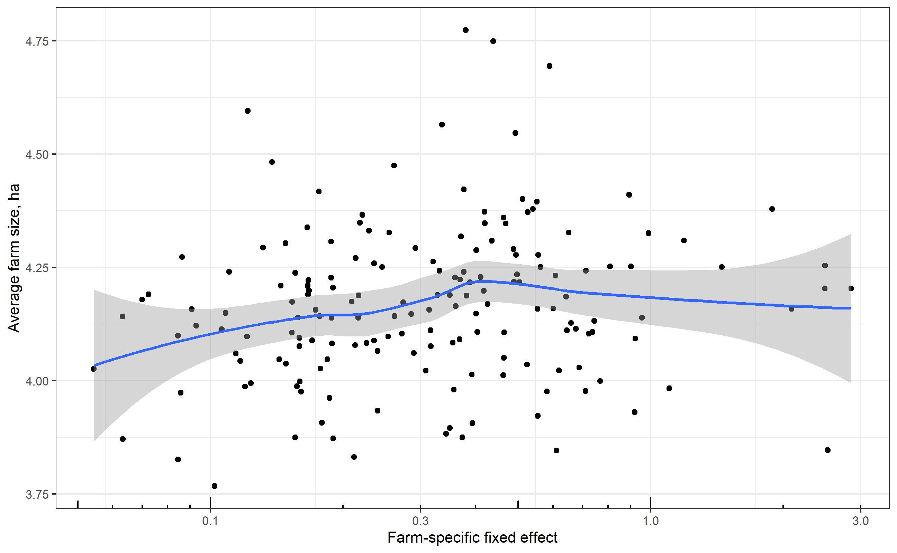

Panel Regression Analysis: Micro application to production function
Eduard Bukin
Example 2. Micro-level application of panel regression analysis RiceFarms
Are larger farms more productive if compared to the smaller once?
This example:
explores relationship between farm size and productivity.
guides through the process of panel regression analysis.
Part 1. Theoretical basis
We employ the Cobb-Douglas Production function:
\[ \ln y = \ln \beta_0 + \sum_{n = 1}^{N} \beta_n \ln x_n + \sum_{k = 1}^{K} \gamma_k \delta_k + \epsilon \]
where,
\(y\) is the output and \(x_n\) are the inputs all in physical mass (or monetary value);
\(N\) is the number of independent variables;
\(\delta_k\) are the shift parameters of additional dummy variables;
\(\beta_0\) , \(\beta_n\) , \(\gamma_n\) are the estimated coefficients;
Estimation strategy. Part 1.
Pooled OLS production function:
\[ \begin{aligned} \ln \text{output}_{it} & = A_0 + \beta_1 \cdot \ln \text{land}_{it} + \beta_2 \cdot \ln \text{labor}_{it} \\ & + \beta_3 \cdot \ln \text{seed}_{it} + \beta_4 \cdot \ln \text{urea}_{it} \\ & + \beta_5 \cdot \ln \text{pesticide}_{it} + e_{it} \end{aligned} \]
What are the ex-ante expectations about the regression coefficients?
- Ideas? …
- Probably all \(\beta\) should be positive.
What about OVB?
\[ \begin{aligned} \ln \text{output}_{it} & = A_0 + \beta_1 \cdot \ln \text{land}_{it} + \beta_2 \cdot \ln \text{labor}_{it} \\ & + \beta_3 \cdot \ln \text{seed}_{it} + \beta_4 \cdot \ln \text{urea}_{it} \\ & + \beta_5 \cdot \ln \text{pesticide}_{it} + e_{it} \end{aligned} \]
What omitted variables could cause bias of our estimates?
- Any!? …
- Any!? …
- Any OVB!? …
- Capital, Ability, Climate, Geography…
Using the OVB formula
- Let us make an educated guess about the effect of OVB on the estimates of land-related coefficient \(\beta_1\)?
Short:
Long:
Aux.
OVB:
\(\text{output}_{it} = A_0^s + \beta_1^s \cdot \text{land}_{it} + \beta_2^s \cdot \text{labor}_{it} + \beta_3^s \cdot \text{seed}_{it} + \beta_4^s \cdot \text{urea}_{it} + \beta_5^s \cdot \text{pesticide}_{it} + e_{it}\)
\(\text{output}_{it} = A_0 + \beta_1 \cdot \text{land}_{it} + \beta_2 \cdot \text{labor}_{it} + \beta_3 \cdot \text{seed}_{it} + \beta_4 \cdot \text{urea}_{it} + \beta_5 \cdot \text{pesticide}_{it} + \color{Red}{\gamma \text{Ability}_i} + e_{it}\)
\(\text{Ability}_i = \pi_0 + \color{Blue}{\pi_1 \cdot \text{land}_{it}} + \pi_2 \cdot \text{labor}_{it} + \pi_3 \cdot \text{seed}_{it} + \pi_4 \cdot \text{urea}_{it} + \pi_5 \cdot \text{pesticide}_{it} + e_{it}\)
\(\text{OVB}_{\text{land}} = \beta_1^s - \beta_1 = \color{Red}{\pi_1} * \color{Blue}{\gamma}\)
Educated guess about the bias of the estimates.
What are the signs of \(\pi_1\) and \(\gamma\)?
- \(\pi_1 > 0\)
- \(\gamma > 0\)
- \(\text{OVB} = (+) \times (+) > 0\)
Not controlling for the OV \(\text{ability}_i\) may cause overestimation of the effect of the farm size \(\beta_1\).
\(\text{ability}_i\) does not vary over time for each farm!
How to resolve such OVB?
Introduce a proxy variable for ability?
- No such data.
Rely on the panel structure of the data.
- Use the individual fixed effect model, for example.
Estimation strategy. Part 2.
Individual fixed effect panel regression production function.
\[ \begin{aligned} \ln \text{output}_{it} & = A_0 + \beta_1 \cdot \ln \text{land}_{it} + \beta_2 \cdot \ln \text{labor}_{it} \\ & + \beta_3 \cdot \ln \text{seed}_{it} + \beta_4 \cdot \ln \text{urea}_{it} \\ & + \beta_5 \cdot \ln \text{pesticide}_{it} \\ & + \color{Red}{\alpha_i} + e_{it} \end{aligned} \]
What are the ex-ante expectations about the regression coefficients?
- Ideas? …
- Probably the same as before: all \(\beta\) should be positive.
Estimation strategy. Part 3. Return to scale (1)
Are larger farms more productive?
To understand this, we need to calculate how joint increase of all inputs change the output.
If increase of all inputs by 1% increases output also by the same 1%, we have a constant return to scale.
If increase of all inputs by 1% increases output also by more than 1%, we have an increasing return to scale.
If increase of all inputs by 1% increases output also by less than 1%, we have an decreasing return to scale.
Estimation strategy. Part 3. Return to scale (2)
From the main equation,
\[ \begin{aligned} \ln \text{output}_{it} & = A_0 + \beta_1 \cdot \ln \text{land}_{it} + \beta_2 \cdot \ln \text{labor}_{it} \\ & + \beta_3 \cdot \ln \text{seed}_{it} + \beta_4 \cdot \ln \text{urea}_{it} \\ & + \beta_5 \cdot \ln \text{pesticide}_{it} \\ & + \color{Red}{\alpha_i} + e_{it} \end{aligned} \]
- return to scale can be estimated as a sum of all coefficients:
\[ \text{Rreturn to scale} = \beta_1 + \beta_2 + \beta_3 + \beta_4 + \beta_5 \]
To perform a hypothesis testing about the return to scale, we need to employ:
- HT about a linear combination of parameters, and
- delta method for estimating standard errors.
Estimation strategy. Part 3. Return to scale (3)
HT about a linear combination of parameters:
- H0 - \(\beta_1 + \beta_2 + \beta_3 + \beta_4 + \beta_5 = 1\) (also can be \(=0\) or any number)
- H1 - \(\beta_1 + \beta_2 + \beta_3 + \beta_4 + \beta_5 \ne 1\) (also can be \(\ne0\) or any number)
We compute standard errors using delta method (car::deltaMethod()).
And perform HT using F statistics.
Part 2. Exploratory data analysis and data description
We operate a farm-level data with following variables:
output- gross output of rice in kgland- the total area cultivated with rice, measured in hectaresseed- seed in kilogramurea- urea in kilogrampesticide- urea in kilogramlabor- total labor in hours (excluding harvest labor)
Data preparation
Load data and calculate rice yields and logs of all variables.
Rows: 1,026
Columns: 15
$ id <dbl> 101001, 101001, 101001, 101001, 101001, 101001, 101017, 101…
$ time <dbl> 1999, 2000, 2001, 2002, 2003, 2004, 1999, 2000, 2001, 2002,…
$ output <dbl> 7980, 4083, 2650, 4500, 16300, 17424, 3840, 2800, 950, 240,…
$ land <dbl> 3.000, 2.000, 1.000, 2.000, 3.572, 3.572, 1.420, 1.420, 0.4…
$ labor <dbl> 2915, 2155, 1075, 2091, 3889, 3519, 810, 855, 460, 109, 230…
$ hiredlabor <dbl> 2875, 2110, 980, 2081, 3889, 3519, 670, 805, 380, 40, 210, …
$ famlabor <dbl> 40, 45, 95, 10, 1, 1, 140, 50, 80, 69, 20, 1, 108, 63, 57, …
$ seed <dbl> 90, 40, 100, 60, 105, 105, 50, 20, 15, 7, 15, 15, 5, 10, 10…
$ urea <dbl> 900, 600, 700, 600, 400, 400, 120, 100, 150, 50, 100, 100, …
$ pest <dbl> 6000, 3000, 5000, 5000, 10200, 10200, 0, 0, 900, 0, 2000, 2…
$ varieties <chr> "mixed", "trad", "high", "high", "high", "high", "trad", "h…
$ status <chr> "owner", "owner", "owner", "owner", "share", "share", "mixe…
$ bimas <chr> "mixed", "mixed", "mixed", "mixed", "no", "no", "mixed", "m…
$ region <chr> "wargabinangun", "wargabinangun", "wargabinangun", "wargabi…
$ price <dbl> 60, 60, 65, 70, 120, 140, 60, 50, 62, 60, 110, 130, 65, 50,…Computing yields and logs
Summary statistics
n_inf <- function(x) sum(is.infinite(x))
n_missing <- function(x) sum(is.na(x)|is.nan(x))
datasummary(
l_output + l_land + l_seed + l_urea + l_pest + l_labor + yields_mt_ha ~
N + n_missing + n_inf + Mean + SD + Median + Min + Max,
data = farm_dta_log)| N | n_missing | n_inf | Mean | SD | Median | Min | Max | |
|---|---|---|---|---|---|---|---|---|
| l_output | 1026 | 0.00 | 0.00 | 6.73 | 0.99 | 6.79 | 3.74 | 9.95 |
| l_land | 1026 | 0.00 | 0.00 | −1.30 | 0.95 | −1.25 | −4.61 | 1.67 |
| l_seed | 1026 | 0.00 | 0.00 | 2.37 | 0.94 | 2.30 | 0.00 | 7.13 |
| l_urea | 1026 | 0.00 | 0.00 | 3.98 | 1.16 | 4.09 | 0.00 | 7.13 |
| l_pest | 1026 | 0.00 | 713.00 | 11.04 | ||||
| l_labor | 1026 | 0.00 | 0.00 | 5.56 | 0.85 | 5.53 | 2.83 | 8.47 |
| yields_mt_ha | 1026 | 0.00 | 0.00 | 3.38 | 1.68 | 3.16 | 0.40 | 27.50 |
- Any problems with data?
Any problems with data?
Any? …
pest, when transformed with logs, produces-Infvalues.- Why is that so?
- Any? …
- Because there are zero values of pesticides application \(\ln 0 = - \infty\).
How to resolve the \(\ln 0\) problem?
-Infinity in logs: lazy solution
- Before log transformation, substitute any zero with a small value, for example
0.0001;
-Infinity in logs: smart solution
Introduce reverse dummy variables for each variable with log of zero, see: Battese (1997);
Substitute negative infinity with zero. . . .
Summary statistics after data cleaning
datasummary(l_pest + l_pest_lazy + l_pest_smart + pest_revdum ~
N + n_missing + n_inf + Mean + SD + Median + Min + Max,
data = farm_dta_log)| N | n_missing | n_inf | Mean | SD | Median | Min | Max | |
|---|---|---|---|---|---|---|---|---|
| l_pest | 1026 | 0.00 | 713.00 | 11.04 | ||||
| l_pest_lazy | 1026 | 0.00 | 0.00 | −4.37 | 7.35 | −9.21 | −9.21 | 11.04 |
| l_pest_smart | 1026 | 0.00 | 0.00 | 2.04 | 3.15 | 0.00 | 0.00 | 11.04 |
| pest_revdum | 1026 | 0.00 | 0.00 | 0.69 | 0.46 | 1.00 | 0.00 | 1.00 |
Farm size vs rice yields
yield_size <-
farm_dta_log %>%
ggplot() +
aes(x = land, y = yields_mt_ha) +
geom_point() +
geom_smooth() +
scale_x_log10("Farm size, ha",
breaks = c(0.01, 0.05, 0.1, 0.2, 0.5, 1, 2, 5, 10)) +
scale_y_log10("Rice yeilds, MT/ha",
breaks = c(0.2, 0.5, 1, 2, 3, 4, 5, 7, 10, 15, 20, 30)) +
annotation_logticks() +
labs(title = "Relationship between farm size and yield of rice",
caption = "Loess non-parametric smoothing line highlights the trend")
yield_sizeFarm size vs rice yields

Farm size vs rice yields by year
Part 3. Estimating the models
Step 1. Pooled OLS (with lm() and plm() functions);
- Validate all assumptions (linearity, collinearity, homogeneity)
Step 2. Fixed Effect and Random Effect models (with plm());
- Choose a consistent model (models) relying on: F-test (
pftest()), Lagrange multiplier test (plmtest()), Hausman test (phtest());
Step 3. Validate homogeneity assumption (cross-sectional dependency and autocorrelation)
- Wooldridge’s test (
pwtest()) and Lagrange-Multiplier tests (pbsytest()).
Step 4. Robust inference and results interpretation.
Step 1 Pooled OLS
rice_pooled <-
plm(l_output ~ l_land + l_labor + l_seed + l_urea +
l_pest_smart + pest_revdum,
data = farm_dta_log, model = "pooling", index = c("id", "time"))
rice_pooled_2 <-
lm(l_output ~ l_land + l_labor + l_seed + l_urea +
l_pest_smart + pest_revdum,
data = farm_dta_log)
rice_pooled
Model Formula: l_output ~ l_land + l_labor + l_seed + l_urea + l_pest_smart +
pest_revdum
Coefficients:
(Intercept) l_land l_labor l_seed l_urea l_pest_smart
4.314437 0.434792 0.253482 0.148404 0.171475 0.091171
pest_revdum
0.512910 Step 1 Linearity and homoscedasticity
Step 1 Collinearity
# Check for Multicollinearity
Low Correlation
Term VIF VIF 95% CI Increased SE Tolerance Tolerance 95% CI
l_labor 4.77 [ 4.28, 5.32] 2.18 0.21 [0.19, 0.23]
l_urea 2.67 [ 2.42, 2.95] 1.63 0.37 [0.34, 0.41]
Moderate Correlation
Term VIF VIF 95% CI Increased SE Tolerance Tolerance 95% CI
l_land 6.94 [ 6.21, 7.78] 2.64 0.14 [0.13, 0.16]
l_seed 5.07 [ 4.55, 5.66] 2.25 0.20 [0.18, 0.22]
High Correlation
Term VIF VIF 95% CI Increased SE Tolerance Tolerance 95% CI
l_pest_smart 25.04 [22.24, 28.20] 5.00 0.04 [0.04, 0.04]
pest_revdum 24.07 [21.38, 27.11] 4.91 0.04 [0.04, 0.05]Step 2 Fixed Effect
rice_fe <-
plm(l_output ~ l_land + l_labor + l_seed + l_urea +
l_pest_smart + pest_revdum,
data = farm_dta_log,
model = "within",
effect = "individual",
index = c("id", "time"))
rice_fe
Model Formula: l_output ~ l_land + l_labor + l_seed + l_urea + l_pest_smart +
pest_revdum
Coefficients:
l_land l_labor l_seed l_urea l_pest_smart pest_revdum
0.41984 0.27084 0.12381 0.16291 0.11029 0.63498 Step 2 FE with lazy log(0)
rice_fe_lazy <-
plm(l_output ~ l_land + l_labor + l_seed + l_urea + l_pest_lazy ,
data = farm_dta_log,
model = "within",
effect = "individual",
index = c("id", "time"))
rice_fe_lazy
Model Formula: l_output ~ l_land + l_labor + l_seed + l_urea + l_pest_lazy
Coefficients:
l_land l_labor l_seed l_urea l_pest_lazy
0.421042 0.263876 0.134373 0.174145 0.007703 Step 2.2 F test for individual effects
Compares FE model to OLS. OLS is always consistent, when Gauss-Markov assumptions are satisfied.
- H0: One model is inconsistent.
- H1: Both models are equally consistent.
Step 2.3 Lagrange Multiplier Tests
Compares FE model to OLS. OLS is always consistent, when Gauss-Markov assumptions are satisfied.
- H0: One model is inconsistent.
- H1: Both models are equally consistent.
Lagrange Multiplier Test - (Honda)
data: l_output ~ l_land + l_labor + l_seed + l_urea + l_pest_smart + ...
normal = 3.7129, p-value = 0.0001025
alternative hypothesis: significant effects
Lagrange Multiplier Test - (Breusch-Pagan)
data: l_output ~ l_land + l_labor + l_seed + l_urea + l_pest_smart + ...
chisq = 13.785, df = 1, p-value = 0.0002049
alternative hypothesis: significant effectsStep 2 Random Effect
rice_re <-
plm(l_output ~ l_land + l_labor + l_seed + l_urea +
l_pest_smart + pest_revdum,
data = farm_dta_log,
model = "random",
effect = "individual",
index = c("id", "time"))
rice_re
Model Formula: l_output ~ l_land + l_labor + l_seed + l_urea + l_pest_smart +
pest_revdum
Coefficients:
(Intercept) l_land l_labor l_seed l_urea l_pest_smart
4.276601 0.433744 0.257738 0.142589 0.169423 0.096608
pest_revdum
0.546997 Step 2 Hausman Test for Panel Models
Compares RE to FE model. FE is assumed to be consistent
- H0: One model is inconsistent.
- H1: Both models are equally consistent.
Step 3 Serial correlation and cross-sectional dependence
Wooldridge’s test for unobserved individual effects
- H0: no unobserved effects
- H1: some effects also dues to serial correlation
Wooldridge's test for unobserved individual effects
data: formula
z = 2.1603, p-value = 0.03075
alternative hypothesis: unobserved effect
Wooldridge's test for unobserved time effects
data: formula
z = 1.6899, p-value = 0.09105
alternative hypothesis: unobserved effectStep 3 lm tests for random effects and/or serial correlation
- H0: serial correlation is zero
- H1: some serial correlation
Step 4. Robust inference
library(lmtest)
rice_pooled_robust <- coeftest(
rice_pooled,
vcovHC(rice_pooled, method = "arellano", type = "HC3", cluster = "group")
)
rice_fe_robust <- coeftest(
rice_fe,
vcovHC(rice_fe, method = "arellano", type = "HC3", cluster = "group")
)
rice_felazy_robust <- coeftest(
rice_fe_lazy,
vcovHC(rice_fe_lazy, method = "arellano", type = "HC3", cluster = "group")
)Step 4. Robust inference
modelsummary(
list(
`Pooled` = rice_pooled_robust,
`FE (rev. dum.)` = rice_fe_robust,
`FE (lazy)` = rice_felazy_robust
),
fmt = 4, statistic = NULL,
estimate = "{estimate}{stars} ({std.error})",
notes = "Robust standard errors clustered at the group level are reported in the brackets.")| Pooled | FE (rev. dum.) | FE (lazy) | |
|---|---|---|---|
| (Intercept) | 4.3144*** (0.2691) | ||
| l_land | 0.4348*** (0.0418) | 0.4198*** (0.0479) | 0.4210*** (0.0486) |
| l_labor | 0.2535*** (0.0333) | 0.2708*** (0.0347) | 0.2639*** (0.0348) |
| l_seed | 0.1484*** (0.0344) | 0.1238*** (0.0370) | 0.1344*** (0.0386) |
| l_urea | 0.1715*** (0.0228) | 0.1629*** (0.0262) | 0.1741*** (0.0269) |
| l_pest_smart | 0.0912*** (0.0172) | 0.1103*** (0.0185) | |
| pest_revdum | 0.5129*** (0.1141) | 0.6350*** (0.1290) | |
| l_pest_lazy | 0.0077*** (0.0020) | ||
| Num.Obs. | 1026 | 1026 | 1026 |
| AIC | 2796.9 | 2187.6 | 2222.6 |
| BIC | 7824.1 | 6376.1 | 6416.0 |
| Robust standard errors clustered at the group level are reported in the brackets. |
Step 4. Robust inference
compare_performance(
list(
`Pooled` = rice_pooled,
`FE with rev. dum` = rice_fe,
`FE lazy` = rice_fe_lazy
)
) # Comparison of Model Performance Indices
Name | Model | AIC (weights) | AICc (weights) | BIC (weights) | R2 | R2 (adj.) | RMSE | Sigma
-------------------------------------------------------------------------------------------------------------
Pooled | plm | 774.9 (<.001) | 775.1 (<.001) | 814.4 (<.001) | 0.876 | 0.875 | 0.350 | 0.351
FE with rev. dum | plm | 503.6 (>.999) | 503.7 (>.999) | 538.2 (>.999) | 0.732 | 0.676 | 0.307 | 0.308
FE lazy | plm | 534.6 (<.001) | 534.6 (<.001) | 564.2 (<.001) | 0.723 | 0.666 | 0.312 | 0.313Part 4. Return to scale (1)
Model Formula: l_output ~ l_land + l_labor + l_seed + l_urea + l_pest_smart +
pest_revdum
Coefficients:
l_land l_labor l_seed l_urea l_pest_smart pest_revdum
0.41984 0.27084 0.12381 0.16291 0.11029 0.63498 Computing sum of the coefficients and robust SE:
library(car)
deltaMethod(
rice_fe,
"l_land + l_labor + l_seed + l_urea + l_pest_smart",
vcov = vcovHC(rice_fe, method = "arellano", type = "HC3", cluster = "group")
) Estimate SE 2.5 %
l_land + l_labor + l_seed + l_urea + l_pest_smart 1.087685 0.031039 1.026850
97.5 %
l_land + l_labor + l_seed + l_urea + l_pest_smart 1.1485Part 4. Return to scale (2)
HT about the sum of the coefficients:
- \(H_0: \text{return to scale} = 1\)
- \(H_0: \text{return to scale} \ne 1\)
linearHypothesis(rice_fe,
"l_land + l_labor + l_seed + l_urea + l_pest_smart = 1",
vcov = vcovHC(rice_fe, method = "arellano", type = "HC3", cluster = "group"))Linear hypothesis test
Hypothesis:
l_land + l_labor + l_seed + l_urea + l_pest_smart = 1
Model 1: restricted model
Model 2: l_output ~ l_land + l_labor + l_seed + l_urea + l_pest_smart +
pest_revdum
Note: Coefficient covariance matrix supplied.
Res.Df Df Chisq Pr(>Chisq)
1 850
2 849 1 7.9806 0.004728 **
---
Signif. codes: 0 '***' 0.001 '**' 0.01 '*' 0.05 '.' 0.1 ' ' 1Conclusions
Regression results
| Pooled | FE (rev. dum.) | FE (lazy) | |
|---|---|---|---|
| (Intercept) | 4.3144*** (0.2691) | ||
| l_land | 0.4348*** (0.0418) | 0.4198*** (0.0479) | 0.4210*** (0.0486) |
| l_labor | 0.2535*** (0.0333) | 0.2708*** (0.0347) | 0.2639*** (0.0348) |
| l_seed | 0.1484*** (0.0344) | 0.1238*** (0.0370) | 0.1344*** (0.0386) |
| l_urea | 0.1715*** (0.0228) | 0.1629*** (0.0262) | 0.1741*** (0.0269) |
| l_pest_smart | 0.0912*** (0.0172) | 0.1103*** (0.0185) | |
| pest_revdum | 0.5129*** (0.1141) | 0.6350*** (0.1290) | |
| l_pest_lazy | 0.0077*** (0.0020) | ||
| Num.Obs. | 1026 | 1026 | 1026 |
| R2. adj | 0.875 | 0.676 | 0.666 |
| F stat. | 1 198.277 | 386.282 | 444.057 |
| p-value | <0.001 | <0.001 | <0.001 |
| df | 1 019 | 849 | 850 |
| Note: All reported variables are transformed with a natural logarithm. Reverse dummy variable that compensates for the zero pesticides use is omitted. Robust standard errors clustered at the group level are reported in the brackets. |
Return to scale
library(car)
deltaMethod(rice_fe,
"l_land + l_labor + l_seed + l_urea + l_pest_smart",
vcov = vcovHC(rice_fe, method = "arellano", type = "HC3", cluster = "group")) Estimate SE 2.5 %
l_land + l_labor + l_seed + l_urea + l_pest_smart 1.087685 0.031039 1.026850
97.5 %
l_land + l_labor + l_seed + l_urea + l_pest_smart 1.1485linearHypothesis(rice_fe,
"l_land + l_labor + l_seed + l_urea + l_pest_smart = 1",
vcov = vcovHC(rice_fe, method = "arellano", type = "HC3", cluster = "group"))Linear hypothesis test
Hypothesis:
l_land + l_labor + l_seed + l_urea + l_pest_smart = 1
Model 1: restricted model
Model 2: l_output ~ l_land + l_labor + l_seed + l_urea + l_pest_smart +
pest_revdum
Note: Coefficient covariance matrix supplied.
Res.Df Df Chisq Pr(>Chisq)
1 850
2 849 1 7.9806 0.004728 **
---
Signif. codes: 0 '***' 0.001 '**' 0.01 '*' 0.05 '.' 0.1 ' ' 1Individual fixed effects
From the regression equation below,
\[ \begin{aligned} \ln \text{output}_{it} & = A_0 + \beta_1 \cdot \ln \text{land}_{it} + \beta_2 \cdot \ln \text{labor}_{it} \\ & + \beta_3 \cdot \ln \text{seed}_{it} + \beta_4 \cdot \ln \text{urea}_{it} \\ & + \beta_5 \cdot \ln \text{pesticide}_{it} \\ & + \color{Red}{\alpha_i} + e_{it} \end{aligned} \]
we know that \(\color{Red}{\alpha_i}\) are the individual fixed effects.
R calculates them and we can explore them.
In fact, those individual fixed effects are the simplest possible measured of farms efficiency!
Extra on fixed effects
Individual fixed effects (extraction 1)
In the model:
Model Formula: l_output ~ l_land + l_labor + l_seed + l_urea + l_pest_smart +
pest_revdum
Coefficients:
l_land l_labor l_seed l_urea l_pest_smart pest_revdum
0.41984 0.27084 0.12381 0.16291 0.11029 0.63498 Individual fixed effects can be extracted as:
101001 101017 101026 101035 101056 101057 101067 101068 101069 101073 101089
3.8470 4.1040 4.2375 4.2631 4.5649 4.2051 4.2591 4.3471 4.3598 4.0599 4.0611
101094 102111 102113 102119 102126 102157 102194 102220 201001 201002 201003
4.0503 4.1591 4.1073 4.2289 3.9991 4.2420 3.9798 4.2032 4.3270 4.3719 4.2906
201009 202039 202061 202066 203079 203080 204096 204114 204116 204124 205132
4.1036 4.2036 4.1584 4.1318 4.2522 4.0977 4.2539 3.9338 4.3095 4.0783 3.9765
205136 205151 205153 206158 206169 207209 208225 209232 209241 209250 301004
3.9870 4.2319 4.2504 4.4004 4.0218 4.2235 4.2522 4.1496 4.0292 4.0267 4.0658
301010 301023 301038 301055 301058 301067 301070 301075 301084 301105 301110
3.7676 4.1062 4.1388 4.1066 4.1385 4.1110 4.0471 4.3944 3.8461 3.9620 3.9876
302116 302120 302131 302134 302137 302142 302143 302144 302146 302147 302151
4.1645 3.8708 4.0910 4.2774 4.1428 4.0946 4.0225 4.1853 4.1072 3.8265 4.1892
302153 302161 302163 302169 302182 302189 302192 302194 302195 302197 302199
3.9304 4.1563 4.1978 4.2176 4.1114 4.2771 4.3379 4.1691 4.3303 4.2350 4.0927
302205 302207 302209 401002 401006 401032 401034 401036 401037 401041 401043
4.1584 3.9223 4.1140 4.2507 3.9059 4.2725 4.0764 3.9731 3.8727 4.0375 4.1468
401049 401058 401063 401069 401075 401077 401092 401095 401109 401122 401124
4.0360 3.9986 3.9069 4.0990 4.2085 4.0976 4.3029 4.2423 4.3479 4.2510 4.1138
401125 401138 402150 402155 402162 402167 402168 402169 402171 402176 402179
4.3466 4.1990 4.1397 4.1476 4.2274 4.0829 3.9949 3.9759 4.1879 4.0469 4.1212
402201 402203 402208 501001 501008 501020 501034 501041 501045 502057 502062
4.1575 4.1735 4.0134 3.8749 4.0124 4.3724 3.8748 4.7488 4.3660 4.0882 4.0824
502080 502081 502112 503135 503136 503143 504161 504162 504167 504168 504169
4.1904 4.1741 4.3069 4.1730 4.2219 4.1793 4.2881 4.2402 4.4824 4.4172 4.0891
504197 504201 504204 601005 601010 601016 602034 603043 603052 603053 603062
4.1560 4.1874 4.3086 4.0255 4.2169 3.9834 4.0436 4.0758 4.2705 3.8823 3.8317
603065 603067 603068 603070 604074 605108 605109 605116 606133 606145 606147
3.9770 3.8956 4.2175 4.2099 4.2280 4.1904 4.0838 4.4748 4.5949 4.4224 4.2922
606151 607164 607167 607168 607170 607188 607195 608205 608207 608215 609227
4.3270 4.3790 4.3251 4.3789 4.3182 4.4098 4.2933 4.1269 4.6940 4.7730 4.1891
609231 609234 609241 609242 609244 609245
4.1425 4.5465 4.2098 4.1420 4.1388 4.2396 Individual fixed effects (extraction 3)
Or, we can extract individual fixed effects with effect-specific standard errors:
fef_dta <-
fixef(rice_fe) %>%
summary() %>%
as.data.frame() %>% rownames_to_column("id") %>%
as_tibble() %>%
mutate(id = as.double(id))
fef_dta# A tibble: 171 × 5
id Estimate `Std. Error` `t-value` `Pr(>|t|)`
<dbl> <dbl> <dbl> <dbl> <dbl>
1 101001 3.85 0.317 12.2 1.96e-31
2 101017 4.10 0.282 14.6 5.20e-43
3 101026 4.24 0.285 14.9 1.09e-44
4 101035 4.26 0.279 15.3 1.11e-46
5 101056 4.56 0.285 16.0 9.02e-51
6 101057 4.21 0.292 14.4 3.46e-42
7 101067 4.26 0.296 14.4 2.89e-42
8 101068 4.35 0.283 15.4 3.87e-47
9 101069 4.36 0.279 15.6 1.62e-48
10 101073 4.06 0.294 13.8 3.35e-39
# ℹ 161 more rowsFarm size and efficiency
Let us compute average farm size and plot fixed effects versus farm size:
farm_mean_size <- farm_dta_log %>% group_by(id) %>% summarise(mean_size = mean(land))
glimpse(farm_mean_size)Rows: 171
Columns: 2
$ id <dbl> 101001, 101017, 101026, 101035, 101056, 101057, 101067, 1010…
$ mean_size <dbl> 2.5240000, 0.7230000, 0.1558333, 0.3211667, 0.3360000, 0.189…Rows: 171
Columns: 6
$ id <dbl> 101001, 101017, 101026, 101035, 101056, 101057, 101067, 1…
$ mean_size <dbl> 2.5240000, 0.7230000, 0.1558333, 0.3211667, 0.3360000, 0.…
$ Estimate <dbl> 3.847036, 4.103960, 4.237548, 4.263063, 4.564856, 4.20514…
$ `Std. Error` <dbl> 0.3166160, 0.2819603, 0.2847204, 0.2792276, 0.2846006, 0.…
$ `t-value` <dbl> 12.15048, 14.55510, 14.88319, 15.26734, 16.03951, 14.3927…
$ `Pr(>|t|)` <dbl> 1.958956e-31, 5.202280e-43, 1.090622e-44, 1.109427e-46, 9…Farm size and efficiency
